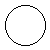

Dans les exercices de cette page, on ne fait plus appel au module PIL.
Les images seront créées/modifiées à partir de simples fichiers textes
(images non compressées au format Pbm,
Pgm ou Ppm)
ou en utilisant le module turtle (dernier exercice).
Une image au format Pbm,
Pgm ou Ppm est
un fichier texte codé ligne par ligne en partant du haut. Chaque ligne est écrite
et lue de gauche à droite. Puisque chaque ligne du fichier texte comporte au
maximum 70 caractères, il peut être très intéressant de passer
à la ligne pour séparer chaque pixel plutôt qu'utiliser des espaces.
Tracés rectilignes
Le format .pbm est un format simple d'image matricielle en noir
et blanc, c'est-à-dire formée d'un rectangle de pixels.
Une image de 10 pixels sur 10 pixels au format .pbm est tout
simplement un fichier texte contenant 10 lignes, chacune de ces lignes étant
constituée de 10 caractères '0' et/ou de
'1'. Dans ce format, chaque
'0' est interprété par un pixel blanc et
chaque '1' par un pixel noir.
Voici un exemple de script Python permettant
de concevoir une image au format .pbm :
##----- Variables et constantes -----##
largeur = 10
hauteur = 10
##----- Ouverture/création des Fichiers -----##
f = open('Lignes_Horizontales.pbm', 'w')
##------ En-tête ------##
f.write('P1 \n') # P1 en ligne 1 pour déclarer le format .pbm puis passage à la ligne
f.write('{} {} \n'.format(largeur, hauteur)) # Largeur et hauteur de l'image, séparées par un espace
##------ Instructions principales ------##
for ligne in range(hauteur):
for colonne in range(largeur):
if ligne%2 == 0: # Lorsque le numéro de ligne est pair
f.write('0')
else:
f.write('1')
f.write('\n')
##----- Fermeture des Fichiers -----##
f.close()

En ouvrant ce fichier avec un logiciel de visualisation d'image, on obtient
l'alternance de lignes horizontales ci-contre (sans les pointillés).
En ouvrant ce fichier avec un éditeur de texte, on obtient l'affichage
ci-dessous :
P1
10 10
0000000000
1111111111
0000000000
1111111111
0000000000
1111111111
0000000000
1111111111
0000000000
1111111111
Concevoir les programmes en Python permettant
d'obtenir les images suivantes, de dimensions 150*150 :
| Un carré noir |
Colonnes noires et blanches |
Croix sur fond blanc |
Losange noir évidé |
|---|
|
|
|
|
- Image n°1
- Image n°2
- Image n°3
- Image n°4
Pour le carré noir, tout va bien :
##----- Variables et constantes -----##
largeur = 150
hauteur = 150
##----- Ouverture/création des Fichiers -----##
f = open('Carre_Noir.pbm', 'w')
##------ En-tête ------##
f.write('P1 \n') # P1 en ligne 1 pour déclarer le format .pbm puis passage à la ligne
f.write('{} {} \n'.format(largeur, hauteur)) # Largeur et hauteur de l'image, séparées par un espace
##------ Instructions principales ------##
for ligne in range(hauteur):
for colonne in range(largeur):
f.write('1')
f.write('\n')
##----- Fermeture des Fichiers -----##
f.close()
On reprend l'exemple et on teste la parité sur les numéros de
colonne, avec une petite astuce supplémentaire...
##----- Variables et constantes -----##
largeur = 150
hauteur = 150
##----- Ouverture/création des Fichiers -----##
f = open('Lignes_Verticales.pbm', 'w')
##------ En-tête ------##
f.write('P1 \n') # P1 en ligne 1 pour déclarer le format .pbm puis passage à la ligne
f.write('{} {} \n'.format(largeur, hauteur)) # Largeur et hauteur de l'image, séparées par un espace
##------ Instructions principales ------##
for ligne in range(hauteur):
for colonne in range(largeur):
f.write(str(colonne%2)) # On inscrit 0 lorsque colonne est pair, 1 sinon
f.write('\n')
##----- Fermeture des Fichiers -----##
f.close()
Pour la croix, un peu de mathématiques s'imposent :
- Un pixel est sur la diagonale «descendante» lorsque son numéro
de ligne est égal à son numéro de colonne ;
- Un pixel est sur la diagonale «montante» lorsque son numéro
de ligne ajouté à son numéro de colonne donne la longueur d'un côté du carrée.
##----- Variables et constantes -----##
largeur = 150
hauteur = 150
##----- Ouverture/création des Fichiers -----##
f = open('Croix.pbm', 'w')
##------ En-tête ------##
f.write('P1 \n') # P1 en ligne 1 pour déclarer le format .pbm puis passage à la ligne
f.write('{} {} \n'.format(largeur, hauteur)) # Largeur et hauteur de l'image, séparées par un espace
##------ Instructions principales ------##
for ligne in range(hauteur):
for colonne in range(largeur):
if (ligne == colonne) or (ligne+colonne == hauteur-1):
f.write('1')
else :
f.write('0')
f.write('\n')
##----- Fermeture des Fichiers -----##
f.close()
Pour le losange, ce sont les mêmes mathématiques que pour la croix,
en séparant la première de la deuxième moitié des lignes.
##----- Variables et constantes -----##
largeur = 150
hauteur = 150
demi = hauteur//2
##----- Ouverture/création des Fichiers -----##
f = open('Losange_Vide.pbm', 'w')
##------ En-tête ------##
f.write('P1 \n') # P1 en ligne 1 pour déclarer le format .pbm puis passage à la ligne
f.write('{} {} \n'.format(largeur, hauteur)) # Largeur et hauteur de l'image, séparées par un espace
##------ Instructions principales ------##
for ligne in range(demi): # Parcours de la 1ère moitié des lignes
for colonne in range(largeur):
if (colonne+ligne == demi-1) or (colonne-ligne == demi-1): # 2ème diagonale du demi-carré et 1ère diagonale
f.write('1 \n')
else :
f.write('0 \n')
for ligne in range(demi): # Parcours de la 2nde moitié des lignes
for colonne in range(largeur):
if (colonne == ligne) or (colonne+ligne == largeur-1): # 1ère diagonale et 2nde diagonale
f.write('1 \n')
else :
f.write('0 \n')
##----- Fermeture des Fichiers -----##
f.close()
Images en couleurs
L'image ci-contre illustre la lecture linéaire (ou l'écriture) des
pixels dans une image matricielle. Pour concevoir ce type d'image dans un
fichier texte, il faut donc «encoder» les composantes de ces
pixels depuis le pixel situé en haut à gauche.
Les images au format .ppm doivent comporter sur les trois
premières lignes :
P3 pour encoder le fichier au format .ppm ASCII ;- la largeur puis la hauteur de l'image, séparées par un espace ;
- la valeur maximale utilisée pour estimer l'intensité maximale de chaque
composante RVB (généralement, ce sera
255).
Concevoir un programme qui permet d'obtenir l'image d'un rectangle de
100 pixels de largeur et
256 pixels de hauteur, de couleur dégradée (linéaire)
du noir (en haut) vers le rouge.
Essayer ensuite de produire d'autres dégradés plus originaux.
- Une piste
- Une autre piste
- Une solution
- Variante plus originale
Le saut à la ligne compte comme un espace. Le plus intéressant est donc d'écrire :
- sur la 4ème ligne les trois composantes RVB (séparées par des
espaces) du 1er pixel ;
- sur la 5ème ligne les trois composantes RVB (séparées par des
espaces) du 2ème pixel ;
- sur la 6ème ligne les trois composantes RVB (séparées par des
espaces) du 3ème pixel ;
- etc...
La 1ère ligne comporte 100 pixels
noirs de composantes '0 0 0'.
La dernière ligne comporte 100 pixels
rouges de composantes '255 0 0'.
##----- Variables et constantes -----##
largeur, hauteur = 100, 256 # Largeur et hauteur de l'image, en pixels
##----- Ouverture/création des Fichiers -----##
f = open('Degrade_Rouge.ppm', 'w')
##------ En-tête ------##
f.write('P3 \n') # Format .ppm
f.write('{} {} \n'.format(largeur, hauteur)) # Largeur et hauteur de l'image, séparées par un espace
f.write('255 \n') # Maximum d'intensité des composantes
##------ Instructions principales ------##
for ligne in range(hauteur):
for colonne in range(largeur):
f.write('{} 0 0 \n'.format(ligne)) # Du noir '0 0 0' au rouge '255 0 0'
f.write('\n')
##----- Fermeture des Fichiers -----##
f.close()
Seule la ligne 13 a été ajoutée, suivie des
indentations nécessaires et d'un renommage du fichier à
obtenir.
##----- Ouverture des fichiers -----##
fsource = open('materiel.txt', 'r')
fsortie = open('materiel_linux.txt', 'w')
##----- Variables et constantes -----##
liste_constructeurs = []
liste_quantite = []
##----- Programme principal -----##
for ligne in fsource:
liste = ligne.split(" ") # Ligne transformée en liste de mots
if 'linux' in liste:
if liste[0] not in liste_constructeurs:
liste_constructeurs.append(liste[0])
liste_quantite.append(int(liste[2])) # Quantité transformée en entier
else:
indice = liste_constructeurs.index(liste[0])
liste_quantite[indice] += int(liste[2])
for i in range(len(liste_constructeurs)):
fsortie.write(liste_constructeurs[i])
fsortie.write(" ")
fsortie.write(str(liste_quantite[i]))
fsortie.write("\n")
##----- Fermeture des fichiers -----##
fsource.close()
fsortie.close()
Empilement de carrés

L'image ci-contre est constituée de sept carrés de couleur noir, rouge, vert,
jaune, bleu, magenta et cyan.
- Rappeler les triplets RVB permettant de représenter les couleurs
précédentes.
- Concevoir une fonction
carre(f, r, v, b) qui permet
d'ajouter au fichier f un carré de 100
pixels de côtés et de couleur unie.
- Utiliser cette fonction pour obtenir l'image ci-contre.
- Un rappel
- Une solution
- Une variante originale
| Couleur |
Composante R |
Composante V |
Composante B |
|---|
| Noir |
0 |
0 |
0 |
| Rouge |
255 |
0 |
0 |
| Vert |
0 |
255 |
0 |
| Jaune |
255 |
255 |
0 |
| Bleu |
0 |
0 |
255 |
| Magenta |
255 |
0 |
255 |
| Cyan |
0 |
255 |
255 |
##----- Définition des Fonctions -----##
def carre(f, r, v, b):
""" Entrees : Un fichier f et trois entiers r, v et b compris entre 0 et 255
Sorties : Ajoute au fichier f un carré de 100 pixels de côté et de couleur unie."""
for i in range(100) :
for j in range(100) :
f.write('{0} {1} {2} \n'.format(r, v, b))
##----- Variables et constantes -----##
largeur, hauteur = 100, 700 # Largeur et hauteur de l'image, en pixels
##----- Ouverture/création des Fichiers -----##
f = open('Carres_Empiles.ppm', 'w')
##------ En-tête ------##
f.write('P3 \n') # Format .ppm
f.write('{} {} \n'.format(largeur, hauteur)) # Largeur et hauteur de l'image, séparées par un espace
f.write('255 \n') # Maximum d'intensité des composantes
##------ Instructions principales ------##
carre(f, 0, 0, 0)
carre(f, 255, 0, 0)
carre(f, 0, 255, 0)
carre(f, 255, 255, 0)
carre(f, 0, 0, 255)
carre(f, 255, 0, 255)
carre(f, 0, 255, 255)
##----- Fermeture des Fichiers -----##
f.close()
Cette variante mise sur une astuce et sur la lecture des nombres binaires.
En effet,
- l'entier
0 a pour écriture binaire
'000' ;
- l'entier
1 a pour écriture binaire
'001' ;
- l'entier
2 a pour écriture binaire
'010' ;
- l'entier
3 a pour écriture binaire
'011' ;
- l'entier
4 a pour écriture binaire
'100' ;
- l'entier
5 a pour écriture binaire
'101' ;
- l'entier
6 a pour écriture binaire
'110' ;
Dans les écritures binaires ci-dessus, les '1'
sont positionnés de manière «symétrique» avec les
255 des codes RVB des couleurs utilisées pour
cette image. On définit donc une fonction binaire()
qui renvoie sous forme de liste l'écriture binaire d'un entier.
Dans les écritures binaires ci-dessus, les '1'
sont positionnés de façon identique aux 255
des codes RGB des couleurs utilisées pour cette image :
- À
'000' correspondra le code RGB (0,0,0) du noir.
- À
'100' correspondra le code RGB (255, 0, 0) du rouge.
- À
'110' correspondra le code RGB (255, 255, 0) du jaune.
- etc...
On définit donc une fonction binaire()
qui renvoie sous forme de liste l'écriture binaire d'un entier.
##----- Définition des Fonctions -----##
def carre(f, r, v, b):
""" Entrees : Un fichier f et trois entiers r, v et b compris entre 0 et 255
Sorties : Ajoute au fichier f un carré de 100 pixels de côté et de couleur unie."""
for i in range(100) :
for j in range(100) :
f.write('{0} {1} {2} \n'.format(r, v, b))
def binaire(n):
""" Entrees : Un entier n
Sorties : renvoie les chiffres de l'écriture binaire "inversée" de n sous
la forme d'une liste (le chiffre de poids k est en indice k)"""
l = []
while n!=0:
l.append(n%2)
n = n//2
while len(l)<3: # Pour avoir au minimum un triplet
l.append(0)
return l
##----- Variables et constantes -----##
largeur, hauteur = 100, 700 # Largeur et hauteur de l'image, en pixels
##----- Ouverture/création des Fichiers -----##
f = open('Carres_Empiles.html', 'w')
##------ En-tête ------##
f.write('P3 \n') # Format .ppm
f.write('{} {} \n'.format(largeur, hauteur)) # Largeur et hauteur de l'image, séparées par un espace
f.write('255 \n') # Maximum d'intensité des composantes
##------ Instructions principales ------##
for i in range(7) : # Petite astuce : écriture binaire des nombres de 0 à 6...
triplet = binaire(i)
carre(f, 255*triplet[0], 255*triplet[1], 255*triplet[2])
##----- Fermeture des Fichiers -----##
f.close()
Tracer un cercle
Comment tracer l'image d'un cercle dans une grille composée de pixels carrés ?
On rappelle que, dans un repère, l'équation du cercle de centre \(I (x_I ; y_I \)
et de rayon \(r\) est \( (x-x_I)^2+(y-y_I)^2 = r^2\).
Recopier puis compléter le programme ci-dessous pour qu'il conçoive
une image au format .Pm de dimensions
50 × 50.
Cette image doit représenter un cercle de centre le pixel au centre de
l'image et de rayon 20 pixels.
##------Initialisation de l'image------##
largeur = 50 # largeur de l'image, en pixels
hauteur = 50 # hauteur de l'image, en pixels
n = largeur*hauteur # dimensions de l'image, en pixels
f = open('Cercle01.pbm', 'w') # Ouverture (création) d’un fichier image .pbm en mode écriture ("w")
f.write('P1 \n') # P1 : format .pbm
f.write('{} {} \n'.format(largeur, hauteur))
##------ Tracé du cercle ------##
r = 20 # rayon du cercle
abscisse = largeur//2 # abscisse du centre du cercle
ordonnee = hauteur//2 # ordonnee du centre du cercle
#
# Partie à compléter...
#
##----- Fermeture des Fichiers -----##
f.close()

L'image à obtenir est représentée ci-contre. Si vous n'obtenez pas
cette image, alors il peut être judicieux de jeter un oeil aux indications
ci-dessous...
- Une piste
- Une autre piste
- Une solution
- Solution plus intéressante
Il est fort probable que l'image obtenue soit celle représentée ci-contre.
Cette figure permet de visualiser la différence entre pixel (plus petit
élément d’une image) et point mathématique. Pour obtenir un «cercle
épais», il faut utiliser une égalité plus permissive, c'est-à-dire un
intervalle de valeurs «autour» de \( r^2 \).
Pour l'égalité stricte, il suffit d'une simple instruction conditionnelle :
«si la somme des carrés est égale au carré du rayon alors...»
Pour l'égalité «large», la condition peut porter sur plusieurs
tests grâce à l'opérateur or ou bien sur
un intervalle en utilisant à bon escient l'opérateur in
et la fonction range().
Solution avec l'égalité stricte (quelques points sont tracés).
##------Initialisation de l'image------##
largeur = 50 # largeur de l'image, en pixels
hauteur = 50 # hauteur de l'image, en pixels
n = largeur*hauteur # dimensions de l'image, en pixels
f = open('Cercle01.pbm', 'w') # Ouverture (création) d’un fichier image .pbm en mode écriture ("w")
f.write('P1 \n') # P1 : format .pbm
f.write('{} {} \n'.format(largeur, hauteur))
##------ Tracé du cercle ------##
r = 20 # rayon du cercle
abscisse = largeur//2 # abscisse du centre du cercle
ordonnee = hauteur//2 # ordonnee du centre du cercle
for i in range(hauteur): # Pour chaque numéro de ligne,
for j in range(largeur): # pour chaque numéro de colonne,
if (j-abscisse)**2+(i-ordonnee)**2 == r**2:
f.write('1 \n') # pixel noir
else :
f.write('0 \n') # pixel blanc
##----- Fermeture des Fichiers -----##
f.close()
Solution avec l'égalité large (le cercle entier est tracé).
##------Initialisation de l'image------##
largeur = 50 # largeur de l'image, en pixels
hauteur = 50 # hauteur de l'image, en pixels
n = largeur*hauteur # dimensions de l'image, en pixels
f = open('Cercle02.pbm', 'w') # Ouverture (création) d’un fichier image .pbm en mode écriture ("w")
f.write('P1 \n') # P1 : format .pbm
f.write('{} {} \n'.format(largeur, hauteur))
##------ Tracé du cercle ------##
r = 20 # rayon du cercle
abscisse = largeur//2 # abscisse du centre du cercle
ordonnee = hauteur//2 # ordonnee du centre du cercle
a=int((r-0.5)**2) # distance minimale entre un pixel et le centre
b=int((r+0.5)**2) # distance maximale entre un pixel et le centre
for i in range(hauteur): # Pour chaque numéro de ligne,
for j in range(largeur): # pour chaque numéro de colonne,
if (j-abscisse)**2+(i-ordonnee)**2 in range(a,b+1): # Pixel entre 19 et 21 pixels du centre
f.write('1 \n') # pixel noir
else :
f.write('0 \n') # pixel blanc
##----- Fermeture des Fichiers -----##
f.close()
Un dégradé déjà étudié
Cet exercice a pour but de concevoir le dégradé ci-dessous de 100 pixels
de hauteur et composé de 1280 couleurs, du rouge au violet (en fait,
il n'y aura que 1276 couleurs différentes si on chipote) :
Pour cela, on étudie une représentation graphique possible des
composantes R, G, B dans un repère du plan pour un tel dégradé
où deux composantes restent constantes tandis que la 3ème
varie de 0 à 255 ou de 255 à 0.
Programmer l'algorithme permettant d'obtenir cette image au format
Ppm bien plus rapidement qu'avec le module turtle.
- Une piste
- Une autre piste
- Une solution
Soit x la colonne du pixel à tracer. Déterminer les valeurs des
composantes R, G, B de ce pixel en fonction de x en complétant
le tableau suivant :
| Intervalle |
Composante R |
Composante G |
Composante B |
|---|
| \(0 ⩽ x ⩽ 255 \) |
\( 255 \) |
\( x \) |
\(0\) |
| \(256 ⩽ x ⩽ ... \) |
..... |
..... |
..... |
| \(... ⩽ x ⩽ ... \) |
..... |
..... |
..... |
| \(... ⩽ x ⩽ ... \) |
..... |
..... |
..... |
| \(... ⩽ x ⩽ ... \) |
..... |
..... |
..... |
Le même tableau, complété cette fois-ci.
| Intervalle |
Composante R |
Composante G |
Composante B |
|---|
| \(0 ⩽ x ⩽ 255 \) |
\( 255 \) |
\( x \) |
\(0\) |
| \(256 ⩽ x ⩽ 511 \) |
\( 511-x \) |
\( 255 \) |
\( 0 \) |
| \(512 ⩽ x ⩽ 767 \) |
\( 0 \) |
\( 255 \) |
\( x-512 \) |
| \(768 ⩽ x ⩽ 1023 \) |
\( 0 \) |
\( 1023-x \) |
\( 255 \) |
| \(1024 ⩽ x ⩽ 1279 \) |
\( x-1024 \) |
\( 0 \) |
\( 255 \) |
##----- Variables et constantes -----##
largeur, hauteur = 1280, 100 # Largeur et hauteur de l'image, en pixels
##----- Ouverture/création des Fichiers -----##
f = open('Arc_En_Ciel.ppm', 'w')
##------ En-tête ------##
f.write('P3 \n') # Format .ppm
f.write('{} {} \n'.format(largeur, hauteur)) # Largeur et hauteur de l'image, séparées par un espace
f.write('255 \n') # Maximum d'intensité des composantes
##------ Instructions principales ------##
for ligne in range(hauteur):
for x in range(largeur):
if (0 <= x) and (x <= 255):
r, v, b = 255, x, 0
elif (256 <= x) and (x <= 511):
r, v, b = 511-x, 255, 0
elif (512 <= x) and (x <= 767):
r, v, b = 0, 255, x-512
elif (768 <= x) and (x <= 1023):
r, v, b = 0, 1023-x, 255
else:
r, v, b = x-1024, 0, 255
f.write('{} {} {} \n'.format(r, v, b))
f.write('\n')
##----- Fermeture des Fichiers -----##
f.close()
Du Gris vers le Noir & Blanc

Cliquer sur l'image ci-contre pour télécharger le logo
Python au
format .pgm. L'image a été «préparée» : sur chaque ligne
du fichier, un seul pixel est encodé en intensité de gris (le maximum est 255).
Concevoir un programme permettant d'obtenir ce logo en noir et blanc.
Pour cela, fixer un seuil d'intensité (ici élevée) en-deçà duquel
le pixel sera affiché en noir, sinon il sera affiché en blanc.
- Image finale
- Une solution
Voici l'image finale à obtenir avec le seuil 208 :

##----- Ouverture des Fichiers -----##
fsource = open('Logo_Python.pgm', 'r') # Ouverture (lecture) du fichier
fresult = open('Logo_Python_n_b.pgm', 'w') # Ouverture (création) du fichier
##------ En-tête ------##
for i in range(3): # Les 3 lignes d'en-tête à recopier :
fresult.write(fsource.readline()) # P2, dimensions, valeur max correspondant au blanc
##------ Instructions principales ------##
seuil = 208 # seuil d'intensité
for element in fsource:
if int(element) < seuil:
fresult.write('0 \n')
else:
fresult.write('255 \n')
##----- Fermeture des Fichiers -----##
fsource.close()
fresult.close()
Permutation circulaire
Cliquer sur l'image ci-contre pour télécharger le logo
Python au format Ppm.
Le fichier a été modifié pour que, sur chaque ligne, se trouve une unique
composante couleur d'un pixel (une ligne pour la composante
rouge, une ligne pour la composante verte, une ligne pour la composante bleue puis
on passe à celles du pixel suivant...).
Concevoir un programme qui permute les composantes de chaque pixel.
- Image finale
- Une solution
Voici l'image finale à obtenir avec la permutation RVB → BRV :
##----- Ouverture des Fichiers -----##
fsource = open('Logo_Python_Compo.ppm', 'r') # Ouverture (lecture) du fichier
fresult = open('Logo_Python_Permut.ppm', 'w') # Ouverture (création) du fichier
##------ En-tête ------##
for i in range(3): # Les 3 lignes d'en-tête à recopier :
fresult.write(fsource.readline()) # P3, dimensions, valeur max correspondant au blanc
##------ Instructions principales ------##
temp = [] # Stockage temporaire des composantes
for element in fsource: # Chaque ligne est une chaîne de caractères
if len(temp) == 3:
r, v, b = temp[0], temp[1], temp[2]
fresult.write('{0} {1} {2} \n'.format(b, r, v))
temp = [element]
else:
temp.append(element)
##----- Fermeture des Fichiers -----##
fsource.close()
fresult.close()
Image cachée ?
Dans cet exercice, une chaîne de caractère va servir d'instruction au
crayon du module turtle. Le programme à concevoir doit :
- Demander à l'utilisateur un texte uniquement composé de
'0' et de '1'
(inutile de gérer les exceptions) ;
- Parcourir les caractères du texte ;
- Dessiner un petit point blanc (rayon 3) pour chaque
'0' lu ;
- Dessiner un gros point noir (rayon 20) pour chaque
'1' lu ;
- Avancer de
1 entre deux caractères ;
- Aller au début de la ligne suivante tous les 20 caractères.
On donne ci-dessous un début de programme, à compléter en utilisant
au moins une fonction.
##----- Importation des modules -----##
from turtle import *
##----- Définition des Fonctions -----##
# A compléter...
##----- Programme Principal -----##
setworldcoordinates(-32,-32, 12,12) # Pour un affichage optimal
stylo = Pen()
stylo.speed(0)
stylo.up()
stylo.setposition(-20, 0)
# A compléter...
stylo.hideturtle()
exitonclick()
Testez le programme en copiant/collant les exemples ci-dessous
(inutile de tenir compte des backlash «\» :
ils seront ignorés par Python et ne sont
là que pour faciliter la mise en page) :
'0000000001000000000000000000101000000000000000010001000000000000001000\
0010000000000001000000010000000000100000000010000000010000000000010000\
0010000000000000100001000000000000000100100000000000000000101000000000\
0000000001010000000000000000100010000000000000010000010000000000001000\
0000100000000001000000000100000000100000000000100000010000000000000100\
00100000000000000010010000000000000000011000000000''0000001000000100000000000010000001000000000000100000010000000000001000\
0001000000000000100000010000000000001000000100000011111111111111111111\
0000001000000100000000000010000001000000000000100000010000000000001000\
0001000000000000100000010000000000001000000100000011111111111111111111\
0000001000000100000000000010000001000000000000100000010000000000001000\
00010000000000001000000100000000000010000001000000''0000000111111000000000000111101111100000000011000000001110000011100000\
0000001100001100000000000001000110000100000100011001000111100011100011\
1100011100011110001111000001000001000001100000000000000000111100000000\
0000000001110010000000000100111100010000000010001101000110000001100011\
0110001110011100001000110001111110001100000110000000000011000000110000\
00001110000000011110101110000000000001111111000000'
- Dessin n°1
- Dessin n°2
- Dessin n°3
##----- Importation des modules -----##
from turtle import *
##----- Définition des Fonctions -----##
def dessiner(t, car):
"""Cette fonction force le crayon t à tracer un petit
point blanc lorsque car vaut '0' et un gros point
noir lorsque car vaut '1'."""
if car == '0':
t.dot(3, "white")
else:
t.dot(20, "black")
def deplacer(t, n):
"""Cette fonction déplace le crayon t selon la valeur
de l'entier n. Lorsque n est un multiple de 20
(n = 20*k), on replace le crayon aux coordonnées
(-20, -k) sinon le crayon avance de 1."""
t.up()
if n%20 == 0:
t.goto(-20, -n//20)
else:
t.forward(1)
##----- Programme Principal -----##
setworldcoordinates(-32,-32, 12,12) # Pour un affichage optimal
stylo = Pen()
stylo.speed(0)
stylo.up()
stylo.setposition(-20, 0)
texte = '0000000001000000000000000000101000000000000000010001000000000000001000\
0010000000000001000000010000000000100000000010000000010000000000010000\
0010000000000000100001000000000000000100100000000000000000101000000000\
0000000001010000000000000000100010000000000000010000010000000000001000\
0000100000000001000000000100000000100000000000100000010000000000000100\
00100000000000000010010000000000000000011000000000'
for i in range(len(texte)):
dessiner(stylo, texte[i])
deplacer(stylo, i+1) # Obligatoire pour une division correcte par 20
stylo.hideturtle()
exitonclick()
##----- Importation des modules -----##
from turtle import *
##----- Définition des Fonctions -----##
def dessiner(t, car):
"""Cette fonction force le crayon t à tracer un petit
point blanc lorsque car vaut '0' et un gros point
noir lorsque car vaut '1'."""
if car == '0':
t.dot(3, "white")
else:
t.dot(20, "black")
def deplacer(t, n):
"""Cette fonction déplace le crayon t selon la valeur
de l'entier n. Lorsque n est un multiple de 20
(n = 20*k), on replace le crayon aux coordonnées
(-20, -k) sinon le crayon avance de 1."""
t.up()
if n%20 == 0:
t.goto(-20, -n//20)
else:
t.forward(1)
##----- Programme Principal -----##
setworldcoordinates(-32,-32, 12,12) # Pour un affichage optimal
stylo = Pen()
stylo.speed(0)
stylo.up()
stylo.setposition(-20, 0)
texte = '0000001000000100000000000010000001000000000000100000010000000000001000\
0001000000000000100000010000000000001000000100000011111111111111111111\
0000001000000100000000000010000001000000000000100000010000000000001000\
0001000000000000100000010000000000001000000100000011111111111111111111\
0000001000000100000000000010000001000000000000100000010000000000001000\
00010000000000001000000100000000000010000001000000'
for i in range(len(texte)):
dessiner(stylo, texte[i])
deplacer(stylo, i+1) # Obligatoire pour une division correcte par 20
stylo.hideturtle()
exitonclick()
##----- Importation des modules -----##
from turtle import *
##----- Définition des Fonctions -----##
def dessiner(t, car):
"""Cette fonction force le crayon t à tracer un petit
point blanc lorsque car vaut '0' et un gros point
noir lorsque car vaut '1'."""
if car == '0':
t.dot(3, "white")
else:
t.dot(20, "black")
def deplacer(t, n):
"""Cette fonction déplace le crayon t selon la valeur
de l'entier n. Lorsque n est un multiple de 20
(n = 20*k), on replace le crayon aux coordonnées
(-20, -k) sinon le crayon avance de 1."""
t.up()
if n%20 == 0:
t.goto(-20, -n//20)
else:
t.forward(1)
##----- Programme Principal -----##
setworldcoordinates(-32,-32, 12,12) # Pour un affichage optimal
stylo = Pen()
stylo.speed(0)
stylo.up()
stylo.setposition(-20, 0)
texte = '0000000111111000000000000111101111100000000011000000001110000011100000\
0000001100001100000000000001000110000100000100011001000111100011100011\
1100011100011110001111000001000001000001100000000000000000111100000000\
0000000001110010000000000100111100010000000010001101000110000001100011\
0110001110011100001000110001111110001100000110000000000011000000110000\
00001110000000011110101110000000000001111111000000'
for i in range(len(texte)):
dessiner(stylo, texte[i])
deplacer(stylo, i+1) # Obligatoire pour une division correcte par 20
stylo.hideturtle()
exitonclick()